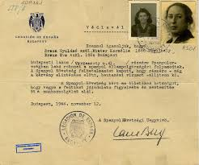
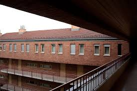

Született: 1912. augusztus 4., Stockholm, Svédország.
Család: Svédország egyik leghíresebb bankár- és diplomatacsalád sarja.
Édesapja fiatalon meghalt, nevelését nagyapja, Gustav Wallenberg irányította.
Tanulmányok: Stockholmi iskolákban tanult, majd az Egyesült Államokban, a Michigan University-n építészetet hallgatott.
Korai élet és karrier
• Dolgozott bankoknál és kereskedelmi cégeknél Európában és Dél-Afrikában.
• Palesztinában találkozott először a Németországból menekült zsidókkal, ami felkeltette humanitárius érdeklődését.
• Visszatérve Svédországba nemzetközi kereskedelemmel foglalkozott.
• Szoros kapcsolatban állt vöröskeresztes szervezetekkel.
Budapesti tevékenysége (1944–45)
1944-ben a svéd követség humanitárius attaséjaként érkezett Budapestre.
Fő tettei:
• Több ezer svéd védlevél kiadása a deportálás ellen.
• Több mint 30 védett ház létrehozása, ahol mintegy 15 000 ember talált menedéket.
• Emberek kiszabadítása menetoszlopokból és deportáló vonatokból.
• Étel és gyógyszer juttatása a rászorulóknak.
• Közbenjárás a magyar és német hatóságoknál emberéletek védelmében.
Végső sorsa
1945.január 17-én eltűnt, amikor a szovjetek elérték Budapestet.
Valószínűleg az NKVD fogságába került.
Sorsa mindmáig bizonytalan; hivatalosan a lubjankai börtönben halt meg.
Öröksége
• Több tízezer ember életét mentette meg a holokauszt idején.
• Az emberiesség, bátorság és civil kiállás világszerte elismert szimbóluma.
• Nevét iskolák, díjak, utcák és emlékművek őrzik világszerte.